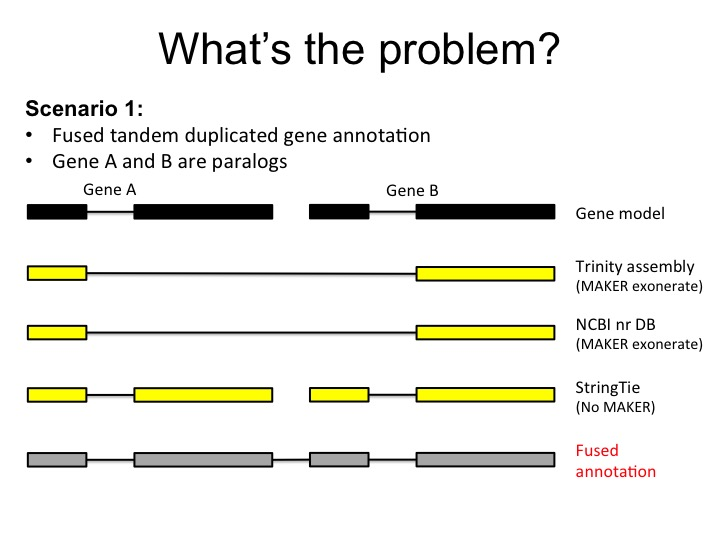
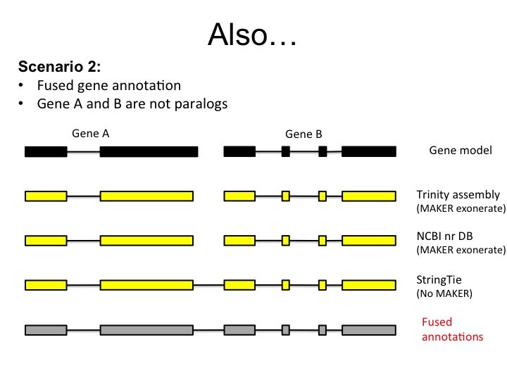

1. Introduction¶
deFusion - a tool to entangle MAKER fused genome annotation
deFusion is a python module developed to solve fused annotation problems experienced while using MAKER for whole genome annotation.
There are two types of fused gene annotations by MAKER:
- fused tandem duplication genes
- fused chimera genes
1.1. Scenario1 - tandem duplicated fused gene annotation¶
Lots of metabolite related genes, especially in plants, are tandemly arrayed in plant genomes. MAKER informed by the transcript alignment by exonerate, which often concatennates those genes into a fused gene.
1.2. Scenario2 - chimera fused gene annotation¶
StringTie transcript provided a high-quality transcript evidence for MAKER genome annotation, however, the noise present in the RNA-seq reads may cause falsely joint of two physically closely related genes.
